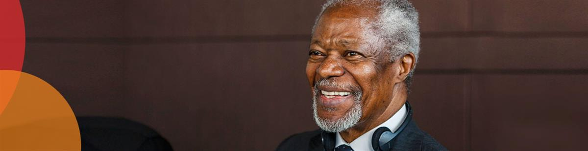

19 May 2020
Articles, Electoral Integrity, News Releases, Supporting Elections and Democracy
Open Letter: Democracy must not become the silent victim of the Coronavirus pandemic
GENEVA, 19th of May 2020 – As extraordinary measures to fight the COVID-19 pandemic continue to prevail around the world, the Kofi Annan Foundation alongside 28 global leaders have published an open letter calling governments and civil society to act to ensure democracy does not become the silent victim of the Coronavirus pandemic.
With over 50 elections postponed across the globe so far, and 19 having gone ahead in unclear times, the signatories of the Letter express concerns that the legitimacy of democracy itself is being challenged.
All around the world, questions are being asked about the sweeping executive powers some governments have used to impose emergency measures and how to limit their long-term impact. More fundamentally, the pandemic is testing the strength and resilience of our political systems.
Countries due to hold elections in the coming months do face a tremendous challenge. They must take draconian measures to prevent the spread of the virus, but also enable citizens to meaningfully participate in the electoral process. Campaign rallies, voter registration, face-to-face debate and election-day gatherings are all complicated by the situation.
The letter sets out the key steps that global democracies need to take to ensure hard-won democratic rights and the integrity of elections are protected. It recommends striking the right balance between legitimate public health concerns and democratic rights and freedoms by following seven principles: following the rule of law; building consensus around constitutional changes; proportionality; clear communication with the public; time-bound; and based on the most up to date technical information.
DOWNLOAD AND SHARE THE LETTERIn English In FrenchIn Spanish
SOURCE: KOFI ANNAN FOUNDATION
Signatories:
ALBRIGHT, Madeleine K. – Former U.S Secretary of State; Chair of the National Democratic Institute (NDI); Member of the Kofi Annan Elections Integrity Panel of Senior Figures.
ANNAN, Nane – Member of the Kofi Annan Foundation Board.
BANBURY, Anthony – President and Chief Executive Officer of the International Foundation for Electoral Systems (IFES); Member of the Kofi Annan Elections Integrity Core Group.
CARTER, Jason J. – Chair of The Carter Center Board of Trustees.
CHINCHILLA, Laura – Vice-President of the Club of Madrid; Former President Costa Rica; Chair of the Kofi Annan Commission on Elections and Democracy in the Digital Age; Member of the Kofi Annan Elections Integrity Panel of Senior Figures.
CLARK, Joe – Former Prime Minister of Canada; Member of the Kofi Annan Elections Integrity Panel of Senior Figures.
DOSS, Alan – President of the Kofi Annan Foundation.
DREIFUSS, Ruth – Former President of the Swiss Confederation and Federal Councillor; Member of the Kofi Annan Elections Integrity Panel of Senior Figures.
GASPARD, Patrick – President of the Open Society Foundation (OSF).
HEYZER, Noeleen – Former Executive Secretary of the United Nations Economic and Social Commission for Asia and the Pacific (ESCAP); Member of the Kofi Annan Commission on Elections and Democracy in the Digital Age.
IBRAHIM, Mo – Founder of the Mo Ibrahim Foundation.
ILVES, Toomas Hendrik – Former President of Estonia; Member of the Kofi Annan Commission on Elections and Democracy in the Digital Age.
JONATHAN, Goodluck – Former President of Nigeria; Chair of the Goodluck Jonathan Foundation; Member of the Kofi Annan Elections Integrity Panel of Senior Figures.
KOENDERS, Bert – Former Foreign Minister of the Netherlands; Member of the Kofi Annan Elections Integrity Panel of Senior Figures.
LETERME, Yves – Former Secretary-General of International IDEA; Former Prime Minister of Belgium; Member of the Kofi Annan Commission on Elections and Democracy in the Digital Age.LEUTHARD, Doris – Former President of the Swiss Confederation; Former member of the Swiss Federal Council; Member of the Kofi Annan Foundation Board.
LEUTARD, DORIS – Former President of the Swiss Confederation; Former member of the Swiss Federal Council; Member of the Kofi Annan Foundation Board.
MACHEL, Graça – Minister for Education and Culture of Mozambique; Former First Lady of Mozambique and South Africa; Member of the Kofi Annan Foundation Board.
MALCORRA, Susana – Former Foreign Minister of Argentina; Former United Nations UnderSecretary-General for Field Support; Former chief operating officer and Deputy Executive Director of the World Food Programme; Member of the Kofi Annan Foundation Board.
MITCHELL, Derek (Amb.) – President of the National Democratic Institute (NDI).
MOLLER, Michael – Former Under-Secretary-General of the United Nations and the 12th Director-General of the United Nations Office at Geneva; Member of the Kofi Annan Foundation Board.
PETERS, Mary Ann Amb. (ret.) – Chief Executive Officer of The Carter Center.
SALAMÉ, Ghassan – Former UN Special Envoy for Libya; Member of the Kofi Annan Foundation Board.
STEDMAN, Stephen – Secretary-General of the Kofi Annan Commission on Elections and Democracy in the Digital Age.
SY, Elhadj As – Chair of the Kofi Annan Foundation Board; Co-Chair of The Global Preparedness Monitoring Board (GPMB); Former Secretary-General of the International Federation of Red Cross and Red Crescent Societies (IFRC).
WIECZOREK-ZEUL, Heidemarie – Former Minister for Economic Cooperation and Development of Germany; Member of the Kofi Annan Elections Integrity Panel of Senior Figures.
will.i.am – Musician and entrepreneur; Member of the Kofi Annan Foundation Board.
YUDHOYONO, Susilo Bambang – Sixth President of the Republic of Indonesia; Member of the Kofi Annan Elections Integrity Panel of Senior Figures.
ZEDILLO, Ernesto – Former President of Mexico; Member of the Kofi Annan Elections Integrity Panel of Senior Figures; Member of the Kofi Annan Commission on Elections and Democracy in the Digital Age.
Electoral Integrity
In 2013, in line with a recommendation of the Global Commission on Elections, Democracy and Security, the Kofi Annan Foundation launched the Electoral Integrity Initiative (EII). The EII is an informal network of organisa-tions and individuals who share a common concern for the unaddressed political challenges that undermine elections, especially in countries that have recently emerged from, or are experiencing, prolonged political instability.
The project is managed by a small team within the Kofi Annan Foundation. A group of individuals from around the world and from organisations with expertise and experience in improving electoral integrity make up the steering group for the project. Membership of the group is by invitation and informal. A group of Senior Public Figures made up of former statesmen and women has agreed to lend their support to the Initiative, and to en-gage, where requested, with individual countries where the risks of fraught and possibly violent elections are high.
SOURCE: KOFI ANNAN FOUNDATION
